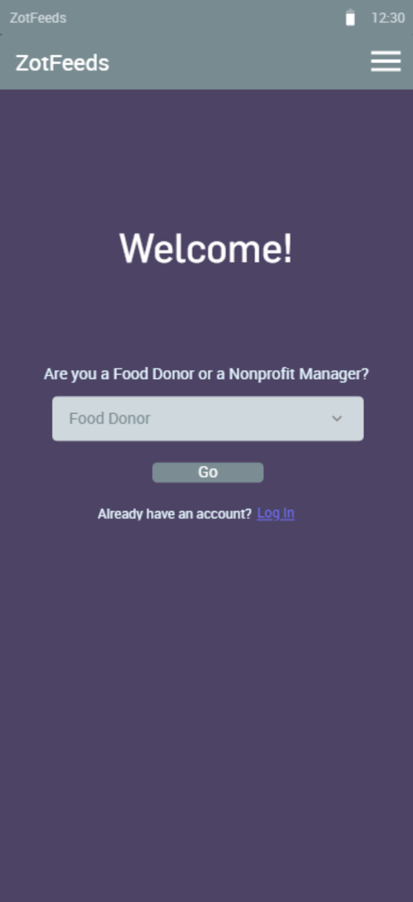

Vaccine Dash (Videogame)
Tinder Map (App)


Scan this QR code with your phone's camera to try the prototype out.
ZotFeeds (App)

Vaccine Dash was a team project game for my Game Design course. I contributed to the source code in the Scratch block code language. I focused on designing the levels and artsy part of the game. I drew each map level and produced the in-game sound score. I also wrote the main story of the game to increase characther connection in the game.
Check out the website
Check out the website
The game takes place in a hospital during an apocaliotic pandemic. I used the Canva and Pixlr websites to sketch and develop the game enviroment. For each level, I focused on increasing the difficulty by adding obstacles and other horror-mistery asthetics.
Click here to see the design document
Click here to see the design document
Tinder Map is an app prototype what I developed and designed. It allows users to find near-by places via swiping. The app shows a picture a long with some description of a near-by place for the user to swipe right (save it for later) or left (discard it). This app facilitates looking for places nearby.
I used the Marvel App website to create the prototype.
Check out the prototype
I used the Marvel App website to create the prototype.
Check out the prototype
Scan this QR code with your phone's camera to try the prototype out.

ZotFeeds is an app prototype developed as a group project. It is the middle man between food donors to drivers, who would pick up the food and bring it to food banks requesting food donations. Food donors can be restuarants or super-markets. This app facilitates food donations by creatig a system to easely donate food.
I wrote the psedo-code for the app and the design of the database.
Open the full design document
I wrote the psedo-code for the app and the design of the database.
Open the full design document
Contact Info